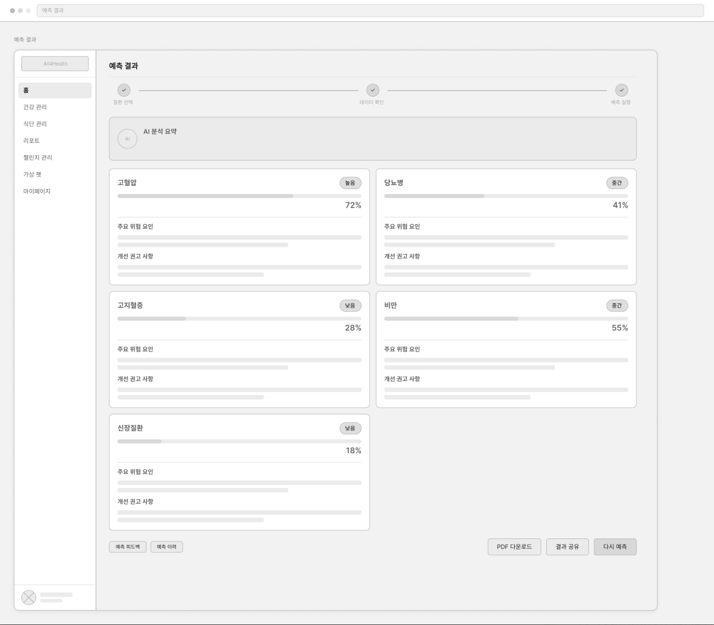
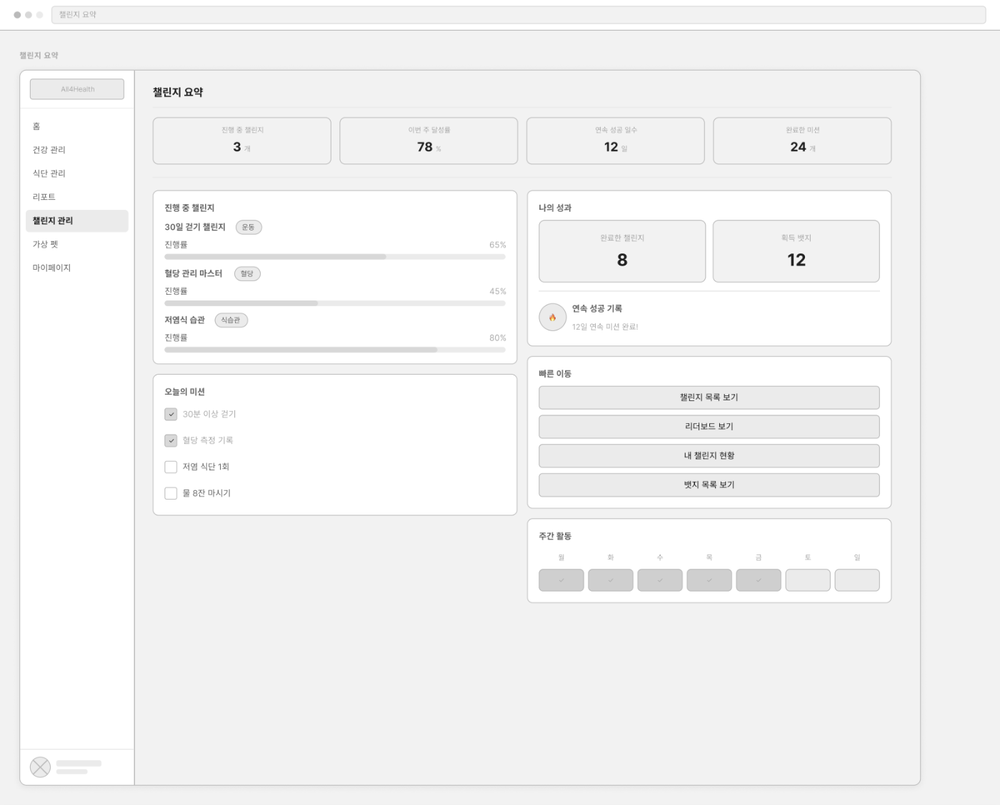

Project 01 · Service Flow
예측 결과를 사용자 행동으로 연결하는 화면 설계
모델 결과가 단순 점수로 끝나지 않도록, 대시보드에서 건강 점수, 최근 예측 결과, AI 조언, 챌린지를 함께 확인하는 흐름으로 와이어프레임을 설계했습니다.
- 홈 화면에서 만성질환 위험도와 건강 점수를 함께 노출해 사용자가 현재 상태를 빠르게 파악하도록 구성
- 예측 결과 화면은 질환별 위험도, 주요 위험 요인, 개선 권고 사항을 분리해 보여주는 구조로 설계
- 모델 결과가 생활습관 챌린지와 이어지도록 대시보드 안에 진행 중 챌린지와 빠른 기록 기능을 배치



Project 01 · Planning & Architecture
기획 문서를 API와 DB 구조로 구체화
서비스 요구사항을 기능 단위로 정리하고, 대시보드·예측·챌린지 흐름이 실제 API와 데이터 모델로 연결될 수 있도록 설계 산출물을 작성했습니다.
- 요구사항 정의서에서 대시보드, 예측, 챌린지 기능을 사용자 행동 기준으로 분리
- API 명세서에 인증, 대시보드, 챌린지 조회 흐름을 엔드포인트 단위로 정리
- 모델 버전, 학습 데이터, 예측 피드백 테이블을 분리해 예측 결과의 추적성과 확장성을 고려


Project 02 · Fertility Prediction · Data
데이터 구성과 문제 정의
난임 시술 데이터를 활용해 임신 성공 확률을 예측하는 이진 분류 프로젝트입니다.
단순 정확도보다 성공 가능성이 높은 케이스를 잘 구분하는 ROC-AUC를 기준으로 접근했습니다.
- Train 256,351건 / Test 90,067건 규모의 시술 데이터 분석
- 성공 클래스가 약 26%인 불균형 데이터로, 순위화 성능을 중심으로 모델링
- 나이, 시술 이력, 배아/난자 지표 등 성공률 차이가 큰 변수를 EDA로 확인


Project 02 · Fertility Prediction · Feature Engineering
도메인 기반 전처리와 파생변수 설계
결측치를 단순 누락으로 처리하지 않고, 시술 미시행이나 해당 없음이라는 도메인 의미를 반영했습니다.
전처리와 인코딩 과정에서는 test 데이터 정보가 섞이지 않도록 누수 방지를 우선했습니다.
- PGD/PGS, DI 시술 관련 결측치를 도메인 의미에 맞춰 처리
- 수치형/범주형 결측은 train 기준 median/mode로 대체하고, unseen label은 -1 처리
- 배아 활용률, 수정률, 난자-배아 전환율, 결측 flag 등 도메인 파생변수 생성


Project 02 · Fertility Prediction · Modeling
OOF 기반 앙상블과 성과 분석
LightGBM과 CatBoost의 서로 다른 예측 패턴을 OOF 기준으로 조합하고,
취약 세그먼트 보정을 통해 최종 예측 안정성을 높였습니다.
- 5-Fold Stratified CV와 multi-seed 학습으로 OOF 예측값 생성
- Compact LGBM, 72-feature LGBM, CatBoost depth7/depth8, feature-count LGBM 조합
- Local OOF AUC 0.74093, Public Leaderboard AUC 0.742116 달성


Project 02 · Fertility Prediction · Limitations
한계와 개선 방향
OOF 분석을 통해 전체 성능뿐 아니라 특정 시술 조건에서의 예측 안정성도 함께 점검했습니다. 아직 해결까지 완료한 항목은 아니지만, 모델이 약해지는 구간과 이후 개선 방향을 명확히 정리했습니다.
- 특정 배아 이식 조건에서 segment별 AUC가 상대적으로 낮은 구간 확인
- 모델 간 예측 상관이 높아 앙상블 다양성에 한계가 있음을 확인
- 향후 segment별 전용 모델, calibration, interaction feature, validation split 개선 필요


Project 03 · Calorie Prediction · Data
타깃 분포와 주요 변수 관계 분석
칼로리 소모량은 낮은 구간에 데이터가 몰려 있어, 원본 타깃을 그대로 학습하면 특정 구간에 예측이 치우칠 수 있었습니다.
타깃 변환과 주요 변수 관계 분석을 통해 모델이 학습해야 할 패턴을 먼저 정리했습니다.
- Calories_Burned 분포를 확인하고 log1p 변환으로 왜도를 완화
- 운동 시간과 심박수가 칼로리 소모량과 강한 관계를 보이는 핵심 변수임을 확인
- 체중 단독 변수는 설명력이 낮아 BMI 등 복합 지표로 재가공할 필요를 도출


Project 03 · Calorie Prediction · Feature Engineering
생리학적 근거를 반영한 파생변수 설계
단순 측정값보다 운동 강도와 신체 조건을 함께 설명하는 변수를 설계하는 데 집중했습니다.
특히 심박수, 운동 시간, 체온, 체격 정보를 결합해 칼로리 소모량과 가까운 신호를 만들었습니다.
- BMI, Max_HR, HR_Zone으로 개인별 신체 조건과 운동 강도를 반영
- Cardio_Load, Total_Load로 심박수와 운동 시간을 결합한 운동부하 변수 생성
- Temp_Load, log_Duration, log_Total_Load 등 비선형 패턴을 보완하는 변수 추가


Project 03 · Calorie Prediction · Modeling
CatBoost 기반 앙상블과 신뢰성 검증
범주형 변수 처리와 회귀 성능을 고려해 CatBoost를 최종 모델로 선택하고,
5-Fold CV와 Multi-Seed Ensemble을 통해 예측 안정성을 높였습니다.
- Linear Regression, Random Forest, XGBoost, LightGBM, CatBoost를 비교해 최종 모델 선정
- Seed 수를 늘릴수록 OOF RMSE가 낮아지는 흐름을 확인하고 다중 앙상블 적용
- Actual vs Predicted와 residual 분포로 예측값의 선형성, 편향, 안정성 점검


Project 04 · Smoking Health Analysis · Summary
흡연 여부에 따른 건강지표 차이 분석
GitHub건강검진 7,000건을 바탕으로 흡연자와 비흡연자의 건강 지표 차이를 탐색하고, 팀장으로서 분석 가설 설정과 통계 검정 흐름을 정리했습니다.
- (팀장) BMI와 연령대를 파생변수로 만들고 흡연 여부별 분포를 확인
- 혈액, 대사, 구강 건강 지표를 중심으로 분석 가설 설정
- T-test와 카이제곱 검정으로 집단 간 차이와 비율 차이를 점검

Project 04 · Smoking Health Analysis · Hypothesis Test
가설을 세우고 검정한 분석 흐름
단순히 그래프를 나열하기보다, 흡연과 관련이 있을 법한 지표를 가설로 세운 뒤 집단 간 차이와 비율 차이를 확인했습니다.
- 고령층 흡연자 집단에서 헤모글로빈 수치 분포 차이를 확인
- 연령대별 흡연 여부에 따라 충치 발생 비율이 달라지는지 비교
- 중성지방 분포가 흡연자 집단에서 상대적으로 높게 이동하는 패턴을 관찰
- 다만 관찰 데이터이므로 흡연이 직접 원인이라고 단정하지 않고, 관련성 중심으로 해석


Project 05 · Rehabilitation Engineering
3D 프린팅 기반 로봇 의수 프로토타입
재활공학 전공 초기에 참여한 학부 팀 프로젝트입니다.
3D 프린팅 부품과 센서 기반 제어 구조를 활용해 팔꿈치 아래 형태의 로봇 의수 프로토타입을 제작했습니다.
- (팀장) 제작 일정 관리, 부품 조립, 출력물 후가공, 제작 과정 문서화 주도
- CATIA/Cura로 설계·출력된 부품을 조립하고 프로토타입 제작 과정에 참여
- Flex sensor, Arduino, Servo motor를 활용한 손가락 움직임 제어 구조를 학습
- 현재는 제출용 자료와 제작 사진 중심으로 남아 있어, 재활공학 도메인 경험을 보여주는 보조 프로젝트로 정리